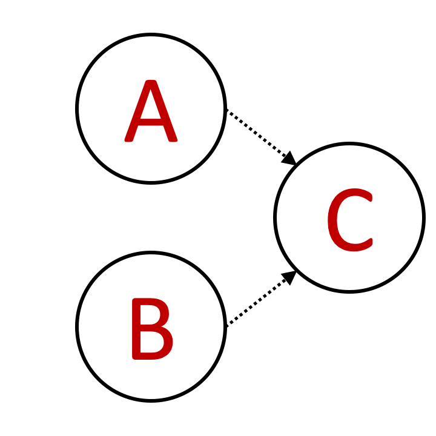
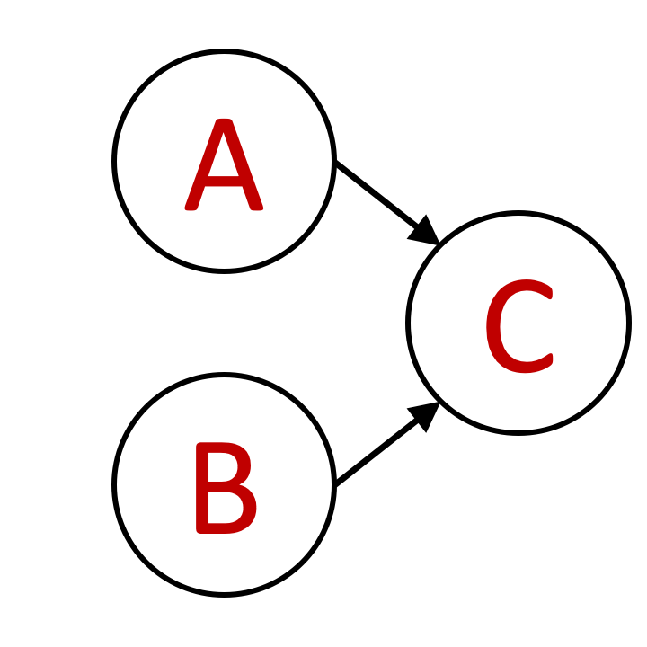
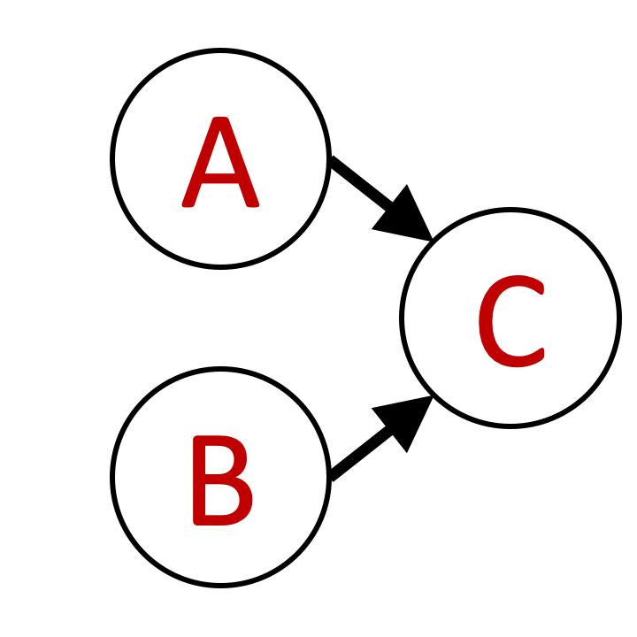
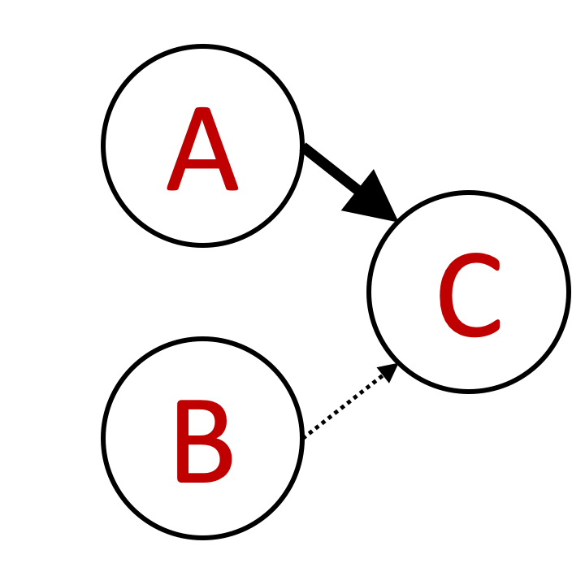
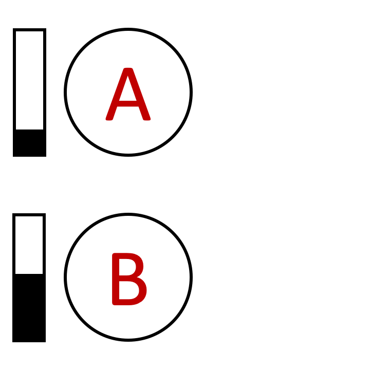
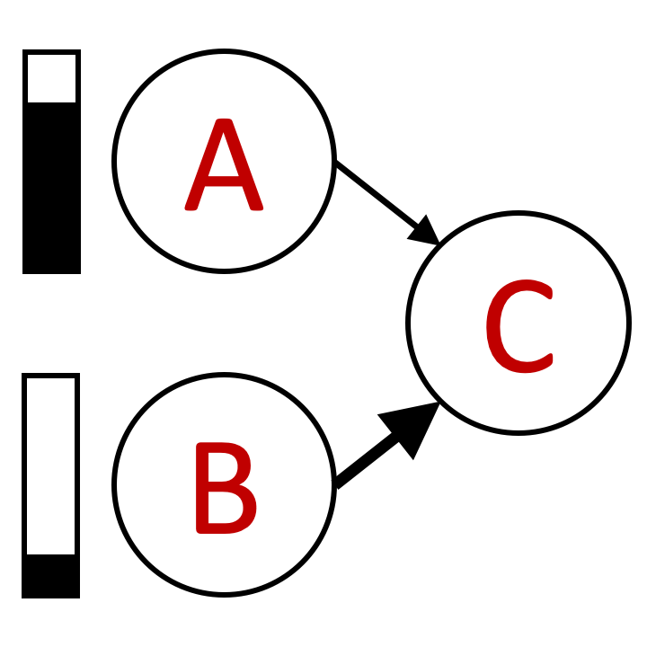
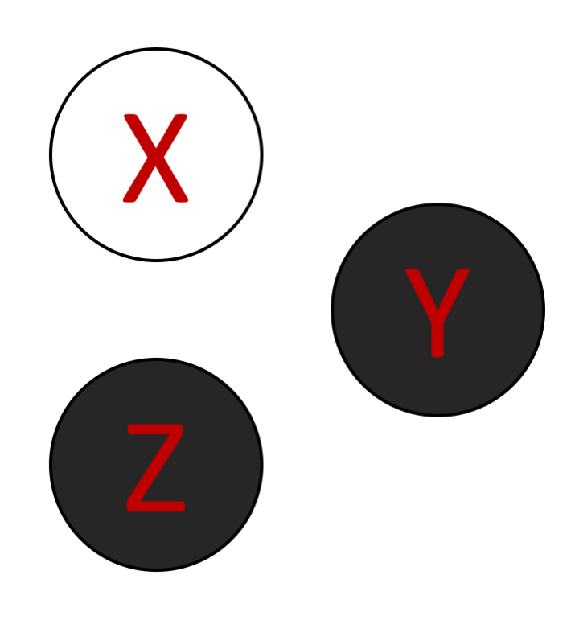
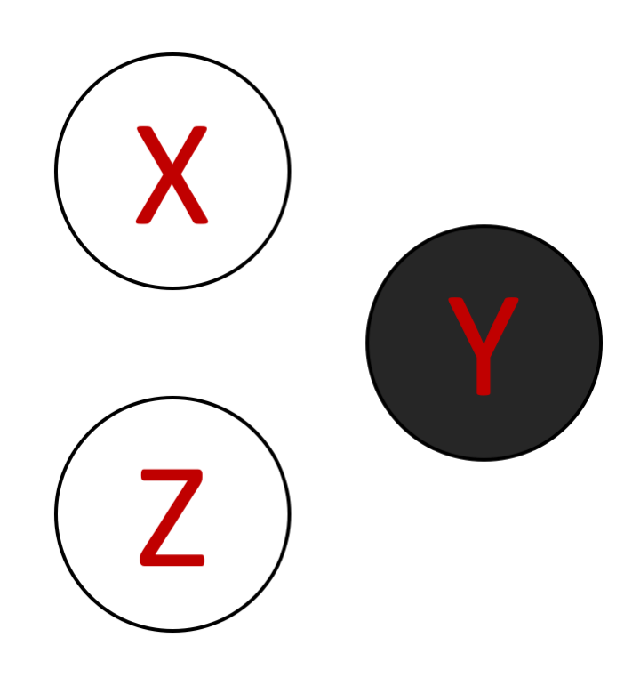

<!DOCTYPE html>
<html>
    <head>
        <title>My experiment</title>
        <script src="../../jspsych-6.1.0/jspsych.js"></script>
         <script src="../../jspsych-6.1.0/plugins/jspsych-html-keyboard-response.js"></script>
         <script src="../../jspsych-6.1.0/plugins/jspsych-instructions.js"></script>
         <script src="custom_plugins/jspsych-two-image-slider-response.js"></script>
         <script src="../../jspsych-6.1.0/plugins/jspsych-image-keyboard-response.js"></script>
        <link href="../../jspsych-6.1.0/css/jspsych.css" rel="stylesheet" type="text/css"></link>
    </head>
    <body></body>
    
     
  <script>


    /* create timeline */
    N_gs = 5
    N_qs = 2
    train_trials = N_gs * N_qs
    test_trials = 5
    N_trials = test_trials + train_trials
    
    var condition = jsPsych.randomization.sampleWithReplacement(['poscorr', 'negcorr'], 1);
    
    console.log(condition)
    
    if (condition == 'poscorr'){
    train_probs = [ 51.,   6.,   6.,   6.,   1.,   1.,   6.,   1.,   1.,   6.,  19.,
         6.,   1.,   2.,   1.,   1.,   2.,   1.,   6.,   6.,  51.,   1.,
         1.,   6.,   1.,   1.,   6.,   6.,   1.,   1.,  19.,   2.,   2.,
         6.,   1.,   1.,   1.,   2.,   1.,   2.,   7.,   2.,   1.,   2.,
         1.,   1.,   1.,   6.,   2.,   2.,  19.,   1.,   1.,   6.,   6.,
         1.,   1.,   6.,   1.,   1.,  51.,   6.,   6.,   1.,   2.,   1.,
         1.,   2.,   1.,   6.,  19.,   6.,   1.,   1.,   6.,   1.,   1.,
         6.,   6.,   6.,  51.]
    } else if (condition == 'negcorr'){
    
    train_probs = [  1.,   1.,   6.,   1.,   1.,   6.,   6.,   6.,  51.,   1.,   2.,
         1.,   1.,   2.,   1.,   6.,  19.,   6.,   6.,   1.,   1.,   6.,
         1.,   1.,  51.,   6.,   6.,   1.,   1.,   6.,   2.,   2.,  19.,
         1.,   1.,   6.,   1.,   2.,   1.,   2.,   7.,   2.,   1.,   2.,
         1.,   6.,   1.,   1.,  19.,   2.,   2.,   6.,   1.,   1.,   6.,
         6.,  51.,   1.,   1.,   6.,   1.,   1.,   6.,   6.,  19.,   6.,
         1.,   2.,   1.,   1.,   2.,   1.,  51.,   6.,   6.,   6.,   1.,
         1.,   6.,   1.,   1.]
    }
    
    test_probs = [   0.,    0.,    0.,    0.,    3.,    0.,    0.,    0.,    0.,
          0.,    3.,    0.,    3.,   26.,    3.,    0.,    3.,    0.,
          0.,    0.,    0.,    0.,    3.,    0.,    0.,    0.,    0.,
          0.,    3.,    0.,    3.,   26.,    3.,    0.,    3.,    0.,
          3.,   26.,    3.,   26.,  205.,   26.,    3.,   26.,    3.,
          0.,    3.,    0.,    3.,   26.,    3.,    0.,    3.,    0.,
          0.,    0.,    0.,    0.,    3.,    0.,    0.,    0.,    0.,
          0.,    3.,    0.,    3.,   26.,    3.,    0.,    3.,    0.,
          0.,    0.,    0.,    0.,    3.,    0.,    0.,    0.,    0.]
        
    var graphs0 = []    
    for (var i = 1; i < 82; i++) {
          graphs0 = graphs0.concat('Slide' + i);
        }   
    var train_graphs = jsPsych.randomization.sampleWithReplacement(graphs0, 500, train_probs).slice(start = 0, end = train_trials);
    
    var test_graphs = jsPsych.randomization.sampleWithReplacement(graphs0, 500, test_probs).slice(start = 0, end = test_trials);
    
    graphs = train_graphs.concat(test_graphs)
    
        
    var queries0 = []    
    for (var i = 1; i < 9; i++) {
          queries0 = queries0.concat('Slide' + i);
        }

    var reps = 1 + N_trials / 8;
    var queries = jsPsych.randomization.repeat(queries0, reps).slice(start = 0, end = N_trials);
    
    var timeline = [];

    /* define welcome message trial */
    var welcome = {
      type: "html-keyboard-response",
      stimulus: "Welcome to the experiment. Press any key to begin."
    };
    timeline.push(welcome);

    /* define instructions trial */
    var intro = {
      type: "html-keyboard-response",
      stimulus: "<p> This study is part of a research project conducted by " +
                "Ishita Dasgupta, Harvard University.</p>"+
                "<p> We want to examine people's intuitions about causes and effects.</p>" +
                "<p> Please read the instructions carefully and try to perform as well as you can.</p>" +
              "<p> If you have any questions, please write an email to  idasgupta@physics.harvard.edu </p><br>"+
              "<p>Press any key to begin.</p>",
    };
    timeline.push(intro);
    
    var instructions = {
      type: "instructions",
      pages: [
        'Welcome to the experiment. Click next to begin.',
        'In this experiment, we want to test your intuitions for cause and effect. <br>'+
        'You will be presented with various causal structures. <br>These causal structures will vary in specific ways as explained in the next pages.',
        'The strength of the causal links can vary. The strength is indicated by the type of arrow'+
        'The three types of arrows are : <br> </img> Weak causal links. For every 100 times the cause occurs, the effect will occur 20 times.'+
        '<br> </img> Moderate causal links. For every 100 times the cause occurs, the effect will occur 50 times.' +
        '<br> </img> Strong causal links. For every 100 times the cause occurs, the effect will occur 80 times. <br>' +
        'The strengths of arrows can be mixed in the same causal structure, for example:'+
        '<br> </img> Indicates a strong causal link between A and C and a weak one between B and C. <br>',
        'The probability of the causes being present can also vary. This is represented with scales next to the causes like </img><br>'+
        'The scale goes from 0% to 100%. <br> In the example here, A is 10% likely to occur, B is 50% likely to occur.',
        'An example causal structure you might see in this experiment is <br> </img> <br>'+
        'Here, A is very likely, B is very unlikely, as shown by the scales. <br> B strongly causes C, and A moderately causes C as given by types of arrows.',
        'Finally, there is some additional noise, and for every 10 times neither A nor B occurs, C will occur 10 times anyway. <br> This remains the same across all causal structures.',
        'After you are given a specific causal structure like </img>, you will see another image that looks like <br> </img>  or </img> etc<br>'+
        'This indicates the state of the world. A node being black indicates it is on, being white indicates it is off.<br>'+
        'Your task is to determine on a slider how likely that state of the world is given the causal structure. <br> You will have to enter a judgement to move on to the next question. <br> Please try to be as accurate in your judgement as possible.',        
        'Click Next to start the experiment. <br>You will not be able to return to the instructions once you begin'
    ],
    show_clickable_nav: true
    };
    


    /* test trials */
    
    for (var trial = 0; trial < N_trials; trial++){
    
        var view_trial = { 
          type: "image-keyboard-response",
          stimulus: 'draw_stimuli/'+graphs[trial]+'.png',
          stimulus_height: 300,
          choices: jsPsych.NO_KEYS, 
          trial_duration: 2000,
          }
          
        timeline.push(view_trial)

        var response_trial = {
          type: "two-image-slider-response",
          stimulus_height: 300,
          resp_stimulus_height: 100,
          labels: ['Very unlikely', 'Very likely'],
          require_movement: true,   
          stimulus: 'draw_stimuli/'+graphs[trial]+'.png',
          resp_stimulus: 'draw_options/'+queries[trial]+'.png',
          }
    
        timeline.push(response_trial);
      
    }

    

    /* start the experiment */
    jsPsych.init({
      timeline: timeline
    });
  </script>
  </html>